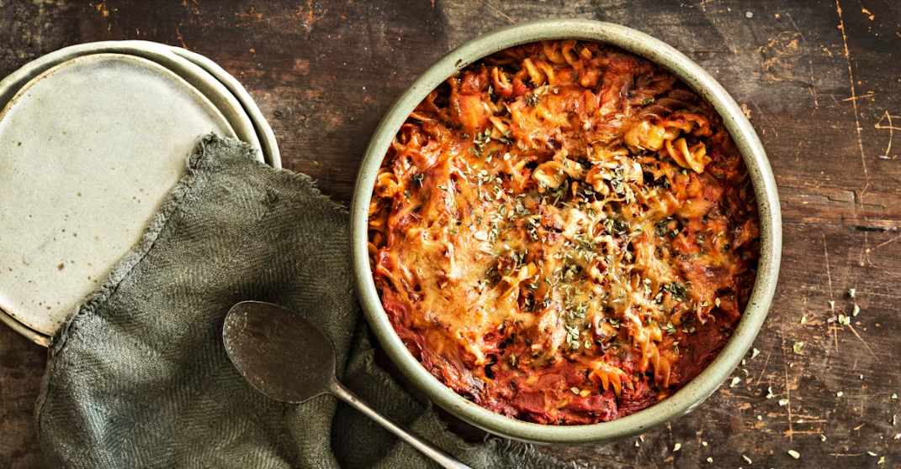

Tuna Pasta In The Oven
Back to main page

A simple recipe for a tuna pasta with tomato flavor thats suitable for the whole family.
This recipe is to make and and pasta are added without boiling them first.
Ingredients:
- 1 (100g) - Onion
- 2 - garlic cloves
- 1/2 tbsp - oil
- 1 packet (200g / 150g) - Pirkka tunapieces in oil
- 1 packet (500g) - Pirkka pasteurized tomatoes
- 1 1/2 dl - water
- 2 tsp - Pirkka pizzaspice
- 1 tsp - salt
- 1/2 tsp - black pepper
- 250g - fusilli whole wheat pasta
- 1 packet (2dl) - Pirkka cheese cream
On the surface
- 2 dl (approx. 100g) - Pirkka emmental-mozzarella grated cheese
Steps to make:
- Slice onion and garlic. Cook till golden on a pan.
- Add tuna ja tomato. Rinse the tomato can with water to get all the tomato pieces and the needed water.
Add the spices. Mix and cook till boiling.
- Put the pasta in a oven tray (approx. 2l).
- Pour the tomato sauce with the pasta in the oven tray and mix.
- Pour the cheese cream in the and mix lightly. Sprinkle the grated cheese on the surface.
- Cook in the 175C oven on the lower level for 45 minutes. After taking it out, let it cool for 10 minutes.